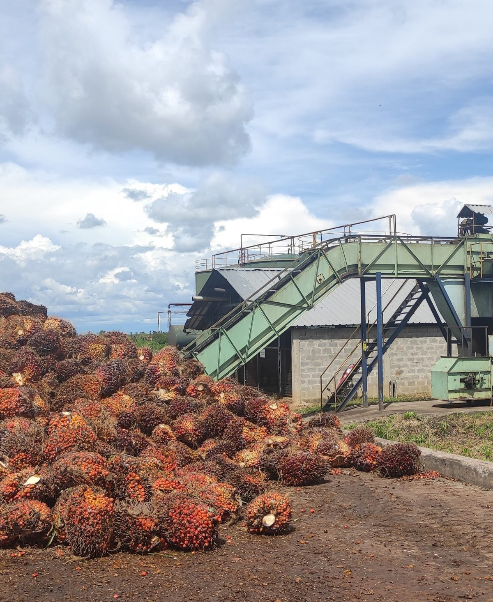
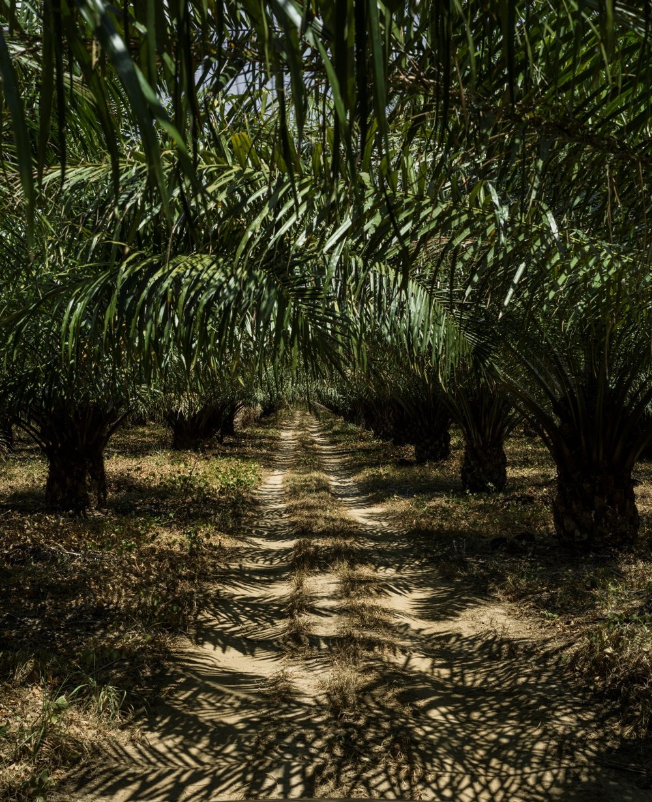
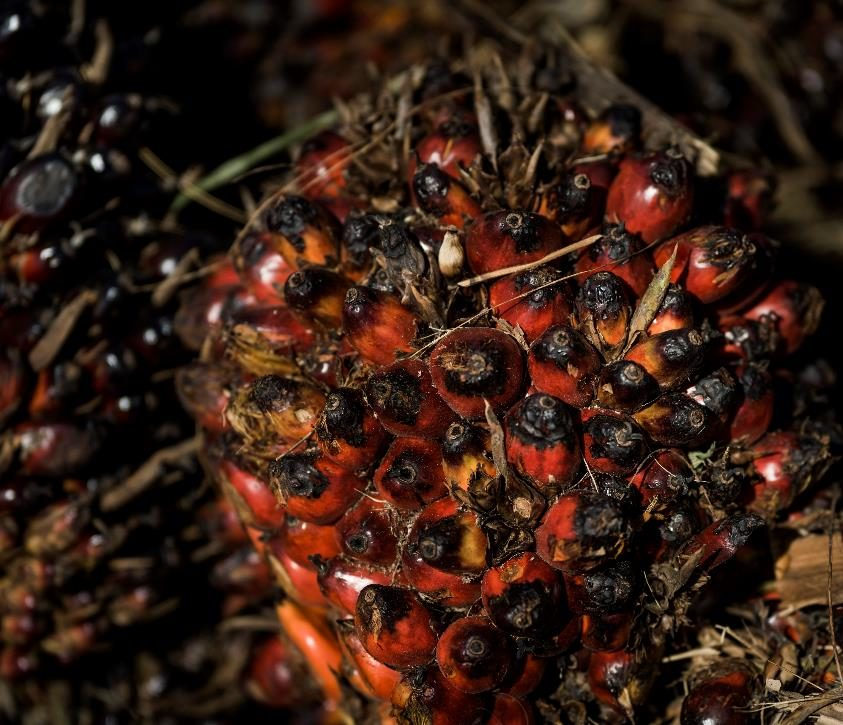
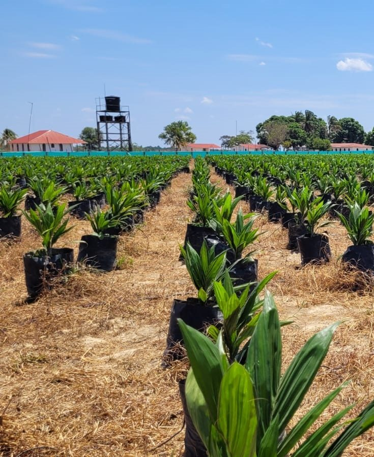
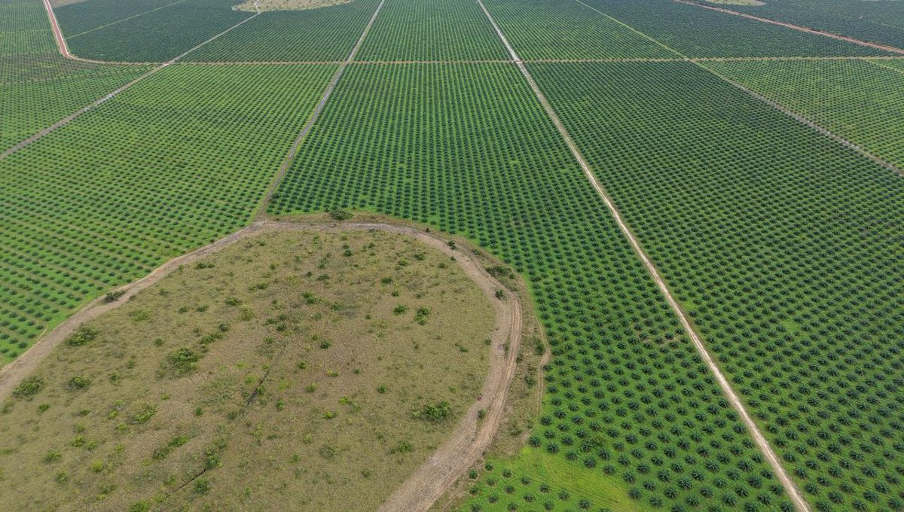

Una empresa de palma de aceite consolidada, comprometida con el progreso de Vichada A Proven Palm Oil Business Invested in Vichada's Progress
No solo sembramos palma. Estamos demostrando que en Vichada, una de las últimas grandes fronteras agrícolas del país, sí puede salir adelante una empresa de verdad. We are not just building a plantation. We are proving that a real business can thrive in Vichada, one of Colombia's greatest untapped agricultural frontiers.





Más de dos décadas trabajando por la región más pobre de ColombiaMore than two decades developing Colombia's poorest region
Llegamos a Vichada en 2003 y, desde entonces, hemos demostrado con hechos que un agronegocio sostenible puede ser el motor de desarrollo de una de las regiones más pobres y apartadas del país.We arrived in Vichada in 2003. Since then we have shown, in practice, that a sustainable agribusiness can become the engine of development for one of Colombia's poorest and most remote regions.

Tres pilares que se sostienen entre síThree pillars that rise together
El negocio, la tierra y la comunidad crecen juntos.Business, land, and community grow together.
Negocio SostenibleSustainable Business
Una empresa rentable y bien manejada es lo que nos permite cuidar la tierra y respaldar a la comunidad.A profitable, well-run operation is what allows us to steward the land and support the community.
Uso Responsable de la TierraResponsible Land Use
Sembramos solo sobre sabana degradada y, desde el primer día, sin tumbar un solo árbol de bosque.We plant only on degraded savanna, with zero deforestation, from the very first day.
Región PrósperaThriving Region
Donde hay pocas oportunidades, generamos empleo formal, llevamos servicios y le apostamos a que la región crezca con nosotros.Where opportunity is scarce, we create formal jobs, build services, and help the region grow with us.
Sostenibilidad de raíz, no como un añadidoSustainability by design, not as an add-on
Sembramos únicamente sobre sabana degradada y, desde el primer día, no deforestamos. El aceite de palma que producimos tiene una huella de carbono negativa, certificada por un análisis de ciclo de vida independiente, y sirve para fabricar biodiésel y otros productos. Y con nuestras prácticas circulares, la materia orgánica vuelve al suelo.We plant exclusively on degraded savanna, with zero deforestation from day one. The palm oil we produce has a carbon-negative footprint, validated by an independent life-cycle assessment, and is used to make biodiesel and other products. Our circular practices return organic matter to the soil.

 Vamos en camino a las certificaciones RSPO e ISCC, previstas para 2027.RSPO and ISCC underway, targeted for 2027.
Vamos en camino a las certificaciones RSPO e ISCC, previstas para 2027.RSPO and ISCC underway, targeted for 2027.

Demostrar que Vichada sí puede salir adelanteProving that Vichada can thrive
Una empresa sostenible que impulsa el desarrollo de toda una región.A sustainable business that pulls a whole region forward.